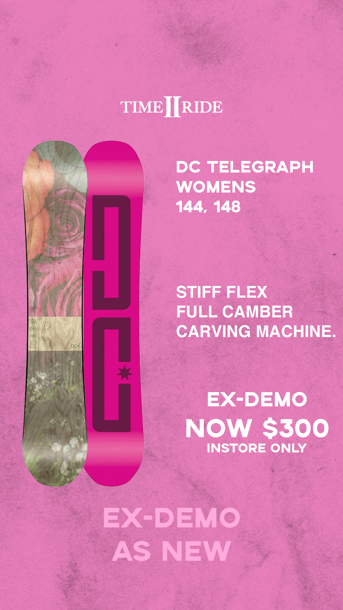

The Adobe Suite.
The Adobe suite provides many of the
tools that I utilise in the digital landscape.
Beginning with my love of photoshop in
high school, I have since branched
out into utilising the full suite.
Photoshop
Starting off with wanting to be able to
make memes, I have learned many
different skills in photoshop that allow
myself to turn any idea into a polished
composition quickly.

DreamWeaver
DreamWeaver is my preferred integrated
development environment for HTML and
CSS development. My first experience with
DreamWeaver was building this very website!
Premier Pro
I initially began using more advanced
video editing software like Premier Pro
and Final Cut Pro in high school, and
have since fallen in love with their ability
to edit video extremely accurately.
I mostly use Premier Pro to make
videos of my hobbies such as this.
Aero
Adobe Aero is a new product that
is focused on building AR experiences.
I have been experimenting with Adobe Aero
and really enjoy the process, although
I am still exploring its true potential.
Illustrator
I use Illustrator to create vector images
that can be utilised at any scale. The
best example of this is the logo I created
for my brand FIELD SNOW.